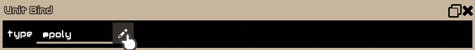
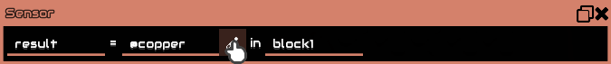
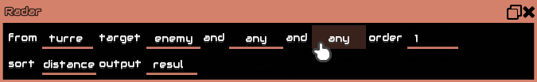
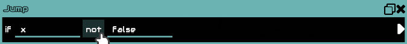

Glosario
Este glosario proporciona explicaciones más detalladas sobre muchos términos utilizados en este manual. El lenguaje utilizado para expresar la mayoria de los términos será ingles debido a que es un estandar a seguir.Tipos de datos
Hay dos tipos de datos principales en Mindustry; number y objectsNo confundir "object" con "objeto", un "objeto" es una referencia a un recurso del juego, como el cobre o plomo.
Number
Un número decimal. Puede ser negativo o positivo, y puede representar valores true (cualquier cosa que no sea igual a 0) o falsos (0). Null tambíen se representa como 0.Algunas instrucciones solo pueden aceptar números enteros, por lo que se indica en consecuencia en este manual.
Internamente, los números se almacenan como valores
float de 64 bits (double)
y se operan como integers de 64 bits con signo (long)
cuando se trata de un desplazamiento de bits.
String
Un object que representa texto entre comillas, por ejemplo:"Hello Mindustry".
Building
Un object que representa una construcción física en un sector/mapaEsto es diferente de un bloque; un bloque es simplemente un tipo de building pero un building es un bloque tangible, ya que tiene salud, interactúa con la energía y los objetos del juego.
Esencialmente, un Building es un bloque que existe físicamente en un sector/mapa.
Por ejemplo, la instrucción
getlink retornará un Building object
del que puedes obtener información sobre el mismo utilizando la instrucción sensor.
Unit
Objeto que representa una unidad en un sector/mapa, incluido el jugador.Por ejemplo, la instrucción
ubind establecerá una variable del procesador
@unit a un Unit object representando una unidad.
Tipos de parámetros
Estos son como los tipos de datos, pero solo funcionan como parámetros para las instrucciones y no son devueltos por ninguna instrucción.BuildingType content
Un tipo de Building, comienza con @.
Dentro del código del juego, esto se conoce mejor como 'Block'. Sin embargo, en aras de la legibilidad en este manual, lo llamaremos BuildingType.
A diferencia de los objetos y líquidos, no puede usar esto en el
sensor.
Sin embargo, puede usar @type en el sensor y compararlo con jump.
Ejemplo:
@scatter
UnitType content
Un tipo de unidad. Comienza con @.
Ejemplo:
@toxopid
Se muestra una lista completa debajo del botón de lápiz en el bloque de instrucciones "Unit Bind".

Senseable
Un objeto, líquido, o una propiedad de Building/Unit que puede ser detectada por elsensor. Comienza con @.
Ejemplos:
@scrap, @slag, @totalAmmo.
Se muestra una lista completa debajo del botón de lápiz en el bloque de instrucciones "Sensor".

Target
Un parametro por el que filtrar una unidad o bloquear un objetivo. Se utiliza principalmente enradar, unit radar y unit locate.
radar y unit radar tienen los mismos Targets,
pero unit locate es diferente, ya que busca Buildings.
Se muestra una lista completa presionando los parámetros después de "target" en
radar y unit radar, o "find", y "type" en unit radar.

Op
Una operación matemática. Esto es diferente de la instrucciónop.
Se muestra una lista completa debajo del botón "+" en el bloque de instrucciones "Operation".
Para las operaciones más complejas, puede buscar en Google: "<nombre de la operación> Java math".
Comp
Una comparación. primordialmente usada en la instrucciónjump
cuando comparamos 2 valores. always siempre retornará true
no importa que, por lo cual siempre causará un salto.
Se muestra una lista completa debajo del botón de comparación en el bloque de instrucciones "Jump".
